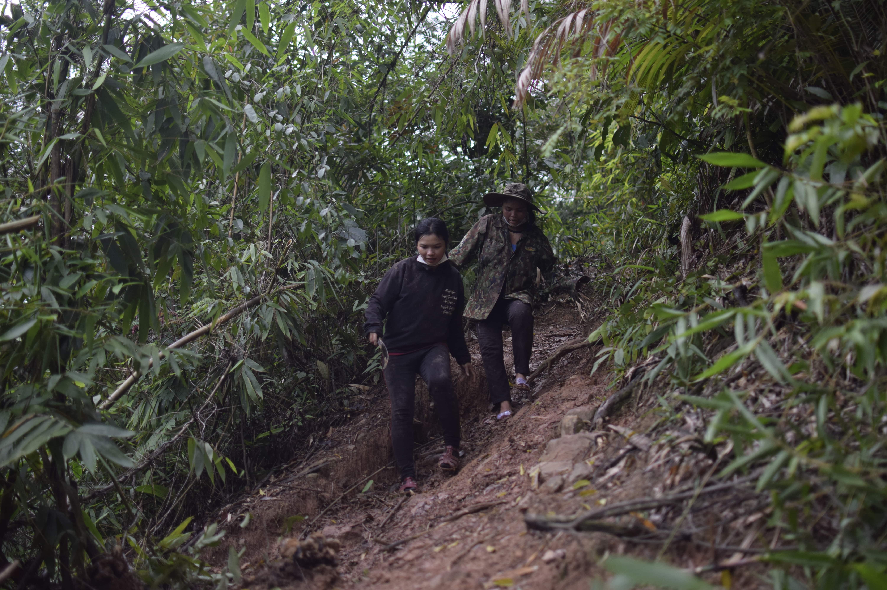

♥Future Rising Fellowship♥
Nam Dong - Hue
For this morning’s early autumn rain, the sun was blessing us with lowered light softer than usual. Thu’s steps quickened despite the full load of firewood burdening her shoulder. Thu’s sister-in-law walked before her, her steps steady as she crossed the streambed, trying to make her way through before dusk. Suddenly the whirlpool intensified, and its currents grew more rapid. Thu looked far beyond, trying to figure out what could be the matter. Her sister-in-law turned to her, “The hydropower plant is draining! Hurry up! It’s getting dangerous.” Not so long after, the water rose to above their knees, then higher, and soon reached her waists. Thu was worried though she had been in this situation before. Their feet scurried, making stumbling on sharp rocks unavoidable.

The night came, and under the little light in her sister’s kitchen, Thu narrated her arduous task, still looking haggard. Beside her, the sister-in-law was applying a bit more of anti infection medicine on her legs. This medicine is indispensable for the women of this Dỗi Hamlet, especially during these rainy days when their feet get long-exposed to water. It’s an everyday task to the Cơ Tu women in this hamlet to fetch firewood and wade through the streams for fish. The firewood would reduce the fuel cost, a major spending of a household. Each three to four hard-working hours of collecting firewood secures a month-worth of fuel. Income from cultivation activities becomes less stable, so any least of cost reduction would suffice the effort. However, landslides on hill tops, water rising from hydro power plant’s drainage, and sudden rains in Nam Đông make this task more arduous.
Since her marriage made her a woman of Dỗi Hamlet (Nam Đông), Thu has often followed her sisters to fetch firewood at noon, when her husband is home to take care of the children or when the children are in school. In the morning, she spends time doing her housework. Some other days of the week, she would go take care of her wattle (an acacia plantation) and rubber field. Married and a mom, she is still among the group of younger women of the hamlet. Therefore, the neighboring ladies support her with her fieldwork and economic activities.
Married at 18, Thu moved to Dỗi Hamlet with her in-law family. At such an age, most of her friends opt for the option of moving to the city for jobs or becoming textiles workers for factories near home. They all would work to earn some funds before returning to cultivation activities, simply because it has no longer provided as stably as it did. In Nam Đông, many young girls quit school to work before the legal age. The story of Díp, Thu’s sister-in-law and her constant supporter when she first moved in, is typical of this type. Díp started working at the age of 15 and kept it from her family, after being introduced by her friends to a well-paid job in the city. A few years later, she returned with a humble fund, swore never to return to the miserable job, and instead to stick to her rather desolate field at home. Unlike Díp’s case, Thu’s parents sent her to boarding school down the district lest she leaves too. Now that Thu is a mother to a four-year-old girl and a young wife to a family of very few members, leaving for city jobs is indeed not of one her intentions, though she would earn much more.
That being said, every meal, every unstable earning from fieldwork, and her wattle field damaged by a recent storm requires all her attention. The wattle trees from 2020’s cultivation season were all damaged. Besides, rubber tapping is not possible during rainy seasons. And so Thu’s husband’s freelance job and some cassava (a type of starchy root vegetable) grown in their garden have been the only sources of income. This situation is shared by Díp’s and many other women’s families in the hamlet. A five-year season of wattle of half a hectare could give an interest of 20 to 30 million Vietnam dongs (roughly $860 to $1300). Because of severe storms and landslides, they earned nothing in 2020. These disasters also influenced other crops like rubber, cassava, corn, and rice. At the same time, the pandemic has put great pressure on their economic activities. Even their most stable source of income from rubber tapping, with which they earn 300,000VND ($13) a day, is hampered by the rain. The scarce and occasional money they get from cassava and corn crops is often not enough to make ends meet. Therefore, a job in a factory with a stable income is a preferable choice for young women like Thu and Díp. Or perhaps, the men are to be the only breadwinners.
The sudden environmental change happening in Nam Đông does not just bring economic challenges to Thu: It puts everyone in the hamlet at risk. Slippery roads and landslides make it more and more difficult for the women of Dỗi Hamlet to come to their fields. Fetching firewood becomes more challenging because of sudden drainage from the hydropower plant. Sometimes heavy rains raise the water level, and they are stuck in the forest. Now as the mother of a four-year-old girl and the co-breadwinner of her little family, Thu has more to worry about. Every flood season gives her anxiety that her backyard garden by the river bank would collapse, taking with it her crop of cassava, or worse: the life of her family. During nights of great storms, Thu and her husband have to pack their things and run to their sister’s house on the other side of the road for shelter, because their house has a leaky roof, and is very likely to be roofless from the wind.
Disasters are not much stranger to people here in Nam Đông, this mountainous area of Thừa Thiên Huế. This area often suffers from natural disasters, from droughts to storms. Its climate is characterized by tropical monsoon with heavy rainfall, combined with sloping terrain that easily causes flash floods and severe landslides. The vegetation cover here has been destroyed over time, making the ability to absorb water in some places very low, making this situation alarming.
Besides the sensitive geographical location, the socio-economic activities of the residents also alter the natural conditions, activating and intensifying disasters such as landslides in some areas. Small and medium irrigation works in the district, such as Khe Lá (Thượng Lộ), Ga Hồn (Thượng Long)... are degraded, putting many limitations on the storage and water supply in the dry season. Deforestation of watersheds, because of economic activities such as road construction, lake construction, dams, mining of minerals, and construction materials, is the most significant. The increase in agricultural, forestry, fishery, and industrial production activities leads to the expansion of arable land. Ever since, there has been more bare land and hills, which decrease protection from flash floods, landslides in the rainy season, and drought in the dry season; the soils cultivated for other purposes are gradually degraded, eroded, and polluted.
Thu participated in local climate change sharing sessions. She has clearly recognized the unpredictable changes in the weather where she was born and could feel that it has gradually become more severe. But perhaps, it’s not equally easy for her to look at climate change in a broader picture, in relations with her daughter and her family’s life or even her own’s, in the future. Will that picture answer the question of what will be left of the already meager agricultural income once the storms come even more frequent? Or who will take care of her daughter and family if she ever decides to leave the fields to distant work?


The worry about Thu's future lies in the next generation, her daughter. Thu, Díp, or young women in Dỗi hamlet have acquired skills of cultivation and animal husbandry from their grandmothers, mothers, and sisters, and then learned more from the women in the community. But few want their children to continue like this, given the precariousness they themselves are going through. Thu also cannot avoid that spiral of life. Working in factories with poor working conditions has frightened Díp, her sister-in-law, and many other friends of hers, and she surely doesn't want to repeat the same mistakes. But cultivation and other fieldwork are no longer safe for her to entrust her hope because of the unpredictable effects of Mother Nature.